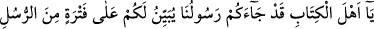
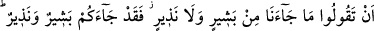
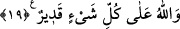

Cahiller ise sonra ellerini başlarına vururlar
İşin başında sonunu gör de,
Kıyamet gününde pişman olmayasın
Hikâye edilmiştir ki, adamın biri kuyumcuya gelerek kendisine âit altın kırıntılarını
tartmak için terâzi istedi. Kuyumcu: “Git başımdan. Benim kalburum yok.” dedi. Bunun
üzerine adam: “Sen benimle alay mı ediyorsun, teraziyi getir.” dedi. Bu sefer kuyumcu:
“Süpürgem de yok.” dedi. Adam: “Bre kuyumcu ben senden terazi istiyorum, sen komik
cevaplar veriyorsun.” deyince kuyumcu ona şöyle cevap verdi: “Sen elleri titrek bir
ihtiyarsın. Altın tozlarını tartarken elinin titremesi, sebebiyle kırıntılar dağılıp yerlere
saçılır. Onları ayırmak için sana süpürge ve kalbur lâzım olur. Onun için böyle
söyledim. Ne söyledimse senin bu işinin sonunu düşündüğüm için söyledim.”
Ben daha işin başında sonunu gördüm
Burdan başka bir yere git, vesselâm
Bil ki Allah’ın sevgilileri, muhtelif derece ve tabakalarda olan evliyâullahtır. Onların
bâzısı avâm, bâzısı havâs, bâzısı da havâssın havâssıdır. Onların her birinin sevgide
belli makamları vardır.
Evliyâullahtan biri, Ma’ruf Kerhî’yi rüyâsında arşın altında gördü. Allah Teâlâ
meleklerine “Bu kim?” diye sordu. Onlar da “Sen daha iyi bilirsin.” dediler. Bunun
üzerine Allah Teâlâ şöyle buyurdu: “Bu, benim sevgimden sarhoş olan Ma’ruf
Kerhî’dir. Ona ancak bana kavuşması yakışır.”
Sevginin kemâli, ancak nefsi tezkiyeden sonra hâsıl olur. Çünkü eğer nefis Allah’ın
gadabına uğramışsa tam olarak rahmete ulaşamaz. Böyle bir nefsin sâhibi, Allah’ı ancak
perdelerin arkasından sever.
Allahım! Bizi, seni çok seven ve senin sevgine doğru bir yol bulup da gidenlerden
eyle!
19- Ey ehl-i kitap! Peygamberlerin arası kesildiği bir sırada size elçimiz geldi.
Gerçekleri size açıklıyor ki (kıyamette): «Bize bir müjdeleyici ve uyarıcı gelmedi.»
demeyesiniz. İşte size müjdeleyici ve uyarıcı geldi. Allah her şeye hakkıyle
kadirdir.